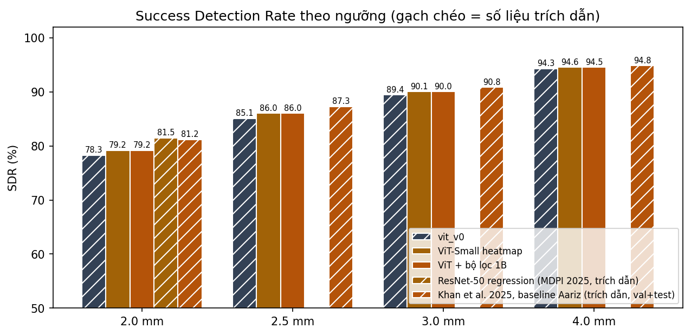
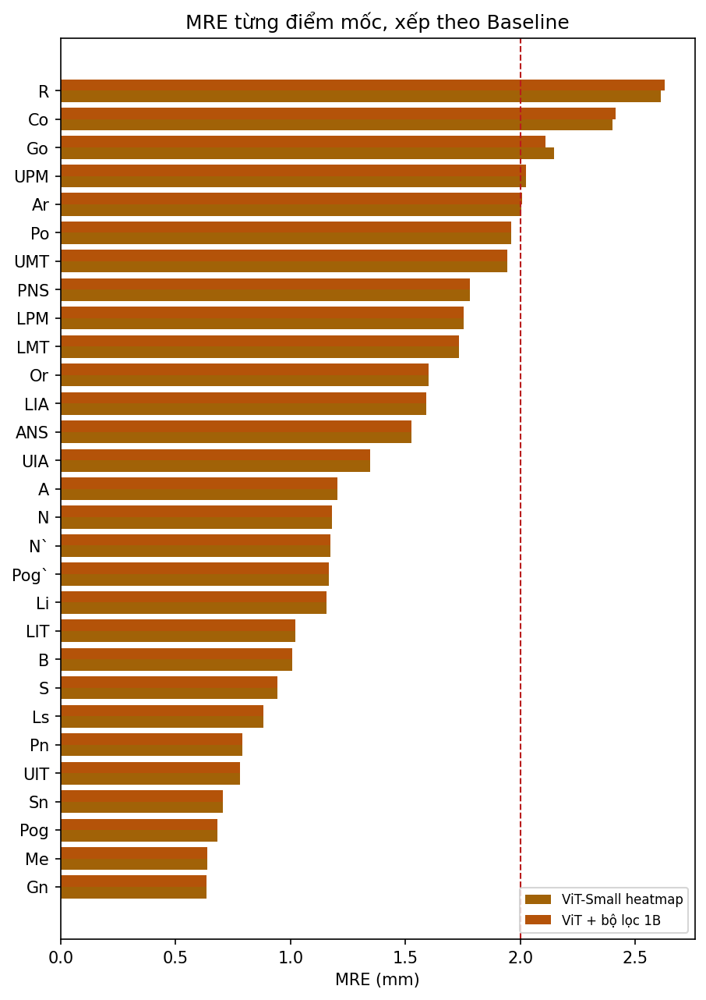
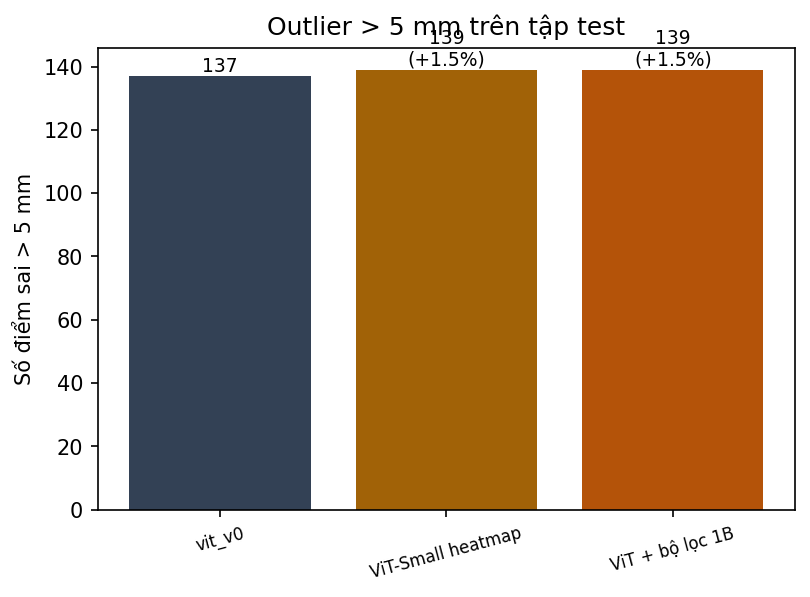
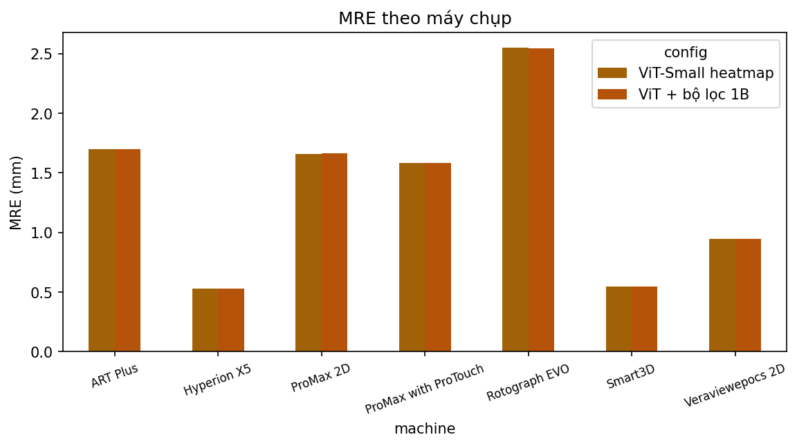

Đặt vấn đề
Phát hiện tự động 29 điểm mốc trên phim sọ nghiêng giúp giảm thời gian đo thủ công. Mô hình hiện có còn ba hạn chế:
Giấy phép
YOLO11-Pose (Ultralytics) theo AGPL-3.0, khó đưa vào sản phẩm doanh nghiệp. Cần backbone mở (timm ViT, Apache-2.0).
Công nghệ cũ
YOLO11 ra đời 2024; giảng viên đề nghị mô hình mới hơn hoặc Transformer.
Khác biệt thiết bị
Ảnh đến từ 7 máy với chất lượng khác nhau; bộ lọc hình học 1B (khung S-N) không cải thiện kết quả.
Mục tiêu và câu hỏi nghiên cứu
Xây dựng mô hình 29 điểm mốc giấy phép mở, chính xác hơn YOLO11-Pose và ít phụ thuộc thiết bị chụp.
RQ1 Đạt
ViT-Small + decoder heatmap có vượt YOLO11-Pose về MRE và SDR trên test Aariz không?
RQ2 Cải thiện
Augmentation theo thiết bị (gamma, tương phản, CLAHE, nhiễu, mờ) có giảm sai số và thu hẹp chênh lệch giữa các máy không?
RQ3 Không hiệu quả
Bộ lọc ràng buộc hình học 1B có giảm số điểm lệch trên 5 mm không?
Phạm vi: giao thức 29 điểm của Aariz; chưa kiểm tra trên dữ liệu ngoài Aariz.
Dữ liệu và chỉ số đánh giá
Aariz
1.000 phim sọ nghiêng, 29 điểm mốc, kích thước pixel (mm) cho từng ảnh.
Chia tập
Train 700 · Valid 150 · Test 150. Checkpoint chọn theo MRE trên valid.
Chỉ số
MRE (mm) · SDR@2/2,5/3/4 mm · Outlier (điểm lệch > 5 mm). Phân tích riêng từng máy; LODO là bước tiếp theo.
Phương pháp
Mô hình dự đoán 29 heatmap, mỗi heatmap cho một điểm mốc; vị trí lấy từ đỉnh heatmap.
- Đầu vào: ảnh xám resize 768 × 768, chuẩn hóa ImageNet.
- Backbone: ViT-Small (timm, Apache-2.0, khởi tạo từ trọng số tiền huấn luyện), lưới token 48 × 48.
- Decoder: hai lớp ConvTranspose (GroupNorm, ReLU) lên 192 × 192 (stride 4), conv 1 × 1 ra 29 heatmap.
- Nhãn và loss: heatmap Gaussian σ = 3; MSE có trọng số vùng gần điểm mốc (1 + 10 × y).
- Huấn luyện: AdamW, lr 5e-4 (backbone ×0,1), warmup 2 epoch + cosine, AMP, cắt gradient 1,0; augmentation theo thiết bị: gamma, tương phản, CLAHE, nhiễu, làm mờ.
- Giải mã: đỉnh heatmap, tinh chỉnh dưới pixel bằng trọng tâm cửa sổ 7 × 7, quy đổi về pixel ảnh gốc và mm.
- Hậu xử lý (tùy chọn): bộ lọc hình học 1B theo khung S-N, khoảng cách Mahalanobis.
Kiến trúc cũ (stride 16, trung bình token rồi MLP) cho MRE 6,78 mm nên được thay bằng decoder stride 4.
Kết quả thực nghiệm sơ bộ
Trên test (150 ảnh), ViT-Small với augmentation theo thiết bị đạt MRE 1,39 mm, thấp hơn baseline YOLO11-Pose 1,93 mm.
| Mô hình | MRE ± SD (mm) | SDR 2 mm (%) | SDR 2,5 mm | SDR 3 mm | SDR 4 mm | Outlier > 5 mm |
|---|---|---|---|---|---|---|
| YOLO11-Pose (baseline) | 1,93 | 64,6 | — | — | — | — |
| ViT-Small heatmap, aug basic | 1,45 ± 1,52 | 78,28 | 85,10 | 89,43 | 94,30 | 137 |
| ViT-Small heatmap, aug device | 1,39 ± 1,51 | 79,20 | 86,05 | 90,07 | 94,55 | 139 |
| ViT device + bộ lọc 1B | 1,39 ± 1,50 | 79,17 | 86,02 | 90,02 | 94,53 | 139 |
| ResNet-50 regression (MDPI 2025, trích dẫn) | 1,25 | 81,5 | — | — | — | — |
- RQ1 — đạt: MRE giảm 1,93 → 1,45 mm (aug basic), SDR@2 mm tăng 64,6% → 78,3%.
- RQ2 — cải thiện: augmentation theo thiết bị giảm thêm 0,06 mm, cả 7 máy đều tốt hơn, nhưng tỉ lệ sai số giữa máy tốt nhất và xấu nhất vẫn khoảng 4,8 lần.
- RQ3 — không hiệu quả: bộ lọc 1B không đổi MRE (1,39 mm) và không giảm outlier (139 điểm).
ResNet-50 dùng giao thức 19 điểm nên chưa so sánh trực tiếp được; mô hình này hiện hơn ViT của đề tài khoảng 0,14 mm. Các cột SDR khác và outlier của baseline sẽ bổ sung khi chạy lại dự đoán baseline.




Tính mới, đóng góp và hạn chế
Đóng góp 1
Pipeline ViT-Small + decoder heatmap stride 4 (timm, Apache-2.0) thay YOLO11-Pose, MRE 1,39 mm trên test.
Đóng góp 2 đang làm
Đánh giá theo từng máy và augmentation theo thiết bị; tiếp theo là LODO (bỏ một máy khi huấn luyện, thử trên máy đó).
Đóng góp 3 dự kiến
Ước lượng độ bất định từ heatmap để cảnh báo điểm khó trước khi bác sĩ dùng.
Hạn chế hiện tại
- Một lần chạy, một seed; chênh MRE 0,06 mm giữa basic và device chưa kiểm định thống kê.
- Chưa thu hẹp khoảng cách giữa các máy; số outlier không giảm.
- Chưa vượt ResNet-50 được trích dẫn (1,25 mm, khác giao thức).
- Chưa kiểm tra bản quyền Aariz cho mục đích thương mại; chưa rà soát kỹ tài liệu liên quan.
Kế hoạch thực hiện
Số liệu hiện có dùng để chốt đề cương nộp 10/11/2026; hạn nộp các bước sau chưa được thông báo.
- Chốt đề cương với kết quả hiện có (10/11/2026).
- LODO: sửa script để loại một máy khỏi train, ưu tiên Rotograph EVO và ART Plus.
- Tăng độ bền theo thiết bị và ước lượng độ bất định; chạy nhiều seed để kiểm định.
- Rà soát tài liệu và bản quyền Aariz; chạy lại dự đoán baseline để điền đủ bảng so sánh.
- Bài báo và slide báo cáo.
- Ứng dụng demo cho người dùng thao tác, dùng để đề xuất doanh nghiệp.
Tài liệu tham khảo
- R. Szeliski, Computer Vision: Algorithms and Applications, Springer, 2022.
- Valliappa L., Martin G., Ryan G., Practical Machine Learning for Computer Vision, O'Reilly Media, 2021.
- Bộ dữ liệu Aariz (1.000 ảnh, 29 điểm) — cần bổ sung tác giả, năm, giấy phép.
- Bài ResNet-50 regression, MDPI 2025 (MRE 1,25 mm, SDR@2 mm 81,5%) — cần bổ sung thông tin bài.
- Khan et al. 2025, baseline trên Aariz (MRE 1,69 ± 3,36 mm, SDR@2 mm 81,18%) — cần bổ sung thông tin bài.
- timm (PyTorch Image Models), Apache-2.0; Ultralytics YOLO11, AGPL-3.0.